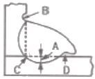

침투비파괴검사기사(구) (2013-09-28 기출문제)
1과목: 침투탐상시험원리
1. 침투탐상에서 침투액의 침투속도를 조절할 수 있는 물리적 특성으로 다른 어느 특성보다도 가장 큰 영향을 미칠 수 있는 것은?
- 침투액의 점성
- 침투액의 비체적
- 침투액의 휘발성
- 침투액의 침윤력
(정답률: 알수없음)

2. 침투탐상검사 전처리에서 고려되어야 할 사항으로서 잘못된 것은?
- 예상되는 오염물의 종류
- 시험체의 제작공정
- 시험체의 용도 및 재질
- 침투액의 강도
(정답률: 알수없음)
3. 침투탐상시험에 사용하는 이상적인 침투제의 조건으로 틀린 것은?
- 매우 미세한 개구부에도 쉽게 침투되어야 한다.
- 증발이나 건조가 너무 빠르지 말아야 한다.
- 얕거나 벌어져 있는 개구부에서도 쉽게 세척되어야 한다.
- 얇은 도포막을 형성하여야 한다.
(정답률: 알수없음)
4. 침투탐상검사를 하기 위한 일반적인 전처리 방법이 아닌 것은?
- 증기 탈지법
- 브라스팀법
- 산 세척법
- 초음파 세척법
(정답률: 알수없음)
5. 표면장력은 어떤 물질에서 일어나는 고유현상인가?
- 기체
- 액체
- 고체
- 잔공
(정답률: 알수없음)
6. 기계가공된 연성의 시험체를 침투탐상검사 하기 전에 스미어(smear)된 부위를 제거할 수 있는 가장 효과적인 방법은 무엇인가?
- 에칭
- 숏 피닝
- 알칼리 세척
- 수세척
(정답률: 알수없음)
7. 음향방출검사(AE)와 초음파탐상검사(UT)에 대한 설명 중 틀린 것은?
- AE는 재료 내부의 동적 거동을 파악하고 결함의 성질과 상태를 평가하는 동적인 결함 검출 기법이다.
- AE는 재료 내부에서 탄성파가 발생하였을 때만 AE신호를 포착하는 수동적인 비파괴계측기법이다.
- UT는 초음파 신호를 직접 입사한 후 결함으로부터 반사해 온 신호를 검출하는 능동적인 비파괴계측기법이다.
- UT는 이미 내부에 존재하고 있는 결함을 검출하는 정적인 결함 검출 기법으로 AE보다 낮은 100KHz이하의 초음파를 수신, 헤석하는 것이 일반적이다.
(정답률: 알수없음)
8. 와전류탐상시험의 장점에 대한 설명으로 옳은 것은?
- 부도체 금속에 적용이 용이하다.
- 시험속도가 빠르며 자동화가 가능하다.
- 결함의 종류 판별 및 내부결함검사가 용이하다.
- 복잡한 형상을 갖는 시험체의 전면 탐상에 유리하다.
(정답률: 알수없음)
9. 용제제거성 형광침투탐상시험법에 대한 설명으로 틀린 것은?
- 침투시간이 짧다.
- 수도시설이 필요하지 않다.
- 시험체를 재검사할 수 없다.
- 큰 기계부품이나 구조물의 부분 탐상에 적합하다.
(정답률: 알수없음)
10. 침투탐상검사가 효과적이지 않는 검사체는?
- 공구강
- 알루미늄
- 콘크리트
- 마그네슘
(정답률: 알수없음)
11. 도체에 교류가 흐르면 도체주위에서 발생되는 현상은?
- 도체 주위에 주기적으로 변하는 전압이 생긴다.
- 도체 주위에 읍력장이 생긴다.
- 도체 주위에 직류자장이 생긴다.
- 도체 주위에 교류장이 생긴다.
(정답률: 알수없음)
12. 비파괴 검사에서 결함의 검출확률에 영향을 미치는 요인과 관계가 가장 먼 것은?
- 시험 환경
- 결함의 개수
- 시험체의 기하학적 특징
- 결함의 방향(orientation)
(정답률: 알수없음)
13. 자분탐상검사의 신뢰도를 향상시킬 수 있는 방법이 아닌 것은?
- 교육과 훈련을 통하여 시험자의 기량을 향상시킨다.
- 검사에 적합한 규격을 선정하여 바르게 적용한다.
- 결함의 검출감도를 높이기 위하여 가급적 높은 전류로 검사한다.
- 생산공정, 예상되는 결함의 종류 등에 따라 검사에 적합한 자화방법을 선정한다.
(정답률: 알수없음)
14. 할로겐 누설검사에서 검출기의 감도를 시험 전, 시험 후 연속하여 사용할 경우에 몇 시간마다 교정하여야 하는가?
- 1시간
- 2시간
- 3시간
- 4시간
(정답률: 알수없음)
15. 두꺼운 철판 내부의 결함 측정에 적합한 비파괴검사법의 조합으로 옳은 것은?
- 방사선투과시험, 자분탐상시험
- 초음파탐상시험, 침투탐상시험
- 초음파탐상시험, 와전류탐상시험
- 방사선탐상시험, 초음파탐상시험
(정답률: 알수없음)
16. 다음 비파괴검사에 대한 설명 중 옳은 것은?
- 단조품의 내부결함 검출에 최적인 것은 누설검사이다.
- 강판의 라미네이션 검출에 가장 적당한 것은 초음파탐상검사이다.
- 주조품의 내부결함 검출에 가장 좋은 검사법은 와류탐상검사이다.
- 맞대기 용접부의 내부결함 검출에 가장 효과적인 겸사법은 침투탐상검사이다.
(정답률: 알수없음)
17. 감마선(γ선)투과검사에 대한 설명으로 옳은 것은?
- 외부의 전원이 필요하다.
- 열려 있는 작은 결함에도 사용할 수 있다.
- 360°또는 일정 방향으로 투사의 조절이 불가능하다.
- 투과 능력은 사용하는 동위원소가 달라도 모두 같다.
(정답률: 알수없음)
18. 다음 중 비파괴검사법과 원리의 연결이 틀린 것은?
- 방사선투과시험-결함에 의한 투과강도의 차이
- 초음파탐상시험-결함에 의한 반사 에코
- 자분탐상시험-결함에 의한 누설 자속
- 침투탐상시험-결함에 의한 표피효과
(정답률: 알수없음)
19. 와류탐상검사를 적용할 때 다음 중 시험코일의 강도가 가장 높은 것은?
- 외경 0.4cm 구리 전선과 내경 1cm 코일
- 외경 1cm 구리 봉과 내경 2cm 코일
- 외경 2cm 알루미늄 봉과 내경 3cm 코일
- 내경 4cm 구리 관과 외경 3cm 코일
(정답률: 알수없음)
20. 1(atm)에 대한 단위의 환산이 틀린 것은?
- 7.6torr
- 14.7psi
- 101.3kPa
- 760mmHg
(정답률: 알수없음)
2과목: 침투탐상검사
21. 다음 중 침투탐상검사 후에 탐상결과의 하나인 침투지시모양은 영구적으로 보관하는 데 효과적인 현상제는?
- 휘발성 용제 현상제
- 플라스틱 필름 현상제
- 분말 현상제
- 수용성 현상제
(정답률: 알수없음)
22. 후유화성 형광침투액 및 습식현상제를 사용하기 위한 반거치식 장비를 설치하고자 할 때 건조기의 위치로 적당한 것은?
- 유화탱크 앞에
- 현상탱크 뒤에
- 현상탱크 앞에
- 세척단계 후에
(정답률: 알수없음)
23. 플라스틱제품에 적용할 침투제의 선정 시 제일 먼저 고려할 사항은?
- 시험체 전처리 상태
- 침투제의 반응성 점검
- 고강도 후유화성 침투제 선정
- 고분해능 염색 침투제 선정
(정답률: 알수없음)
24. 티타늄의 침투탐상검사에서 탐상제의 구성 성분 중 규제대상인 것은?
- 유화제와 유지류
- 형광침투액 함유량
- 탄소함유량과 유지류
- 염소와 불소 함유량
(정답률: 알수없음)
25. 다음 형광침투탐상시험법 중 검사속도가 가장 빠르고 간단한 검사방법은?
- 형광침투, 수세법
- 형광침투, 유화제법-유성
- 형광침투, 유화제법-수성
- 형광침투, 용제법
(정답률: 알수없음)
26. 전처리 방법 중 증기세척의 가장 큰 특징은?
- 산화물, 유기물의 제거에 좋다.
- 스케일, 슬래그의 제거에 좋다.
- 솔벤트, 알칼리용액의 제거에 좋다.
- 절삭유, 연마제, 그리스 등의 제거에 좋다.
(정답률: 알수없음)
27. 침투탐상검사시 폭이 넓은 균열은 어떠한 형태의 지시로 나타나겠는가?
- 점성
- 구멍
- 큰 점
- 연속적인 선
(정답률: 알수없음)
28. 자외선조사등(black light)을 사용시 수은등이 충분히 가열될 때까지 최소 몇 분을 주어야 하는가?
- 2분
- 5분
- 10분
- 15분
(정답률: 알수없음)
29. 침투제의 성능을 조사하기 위한 일반적인 방법은?
- 침투액의 점도 조사
- 침투액의 적심성 조사
- 침투액의 휘발성 조사
- 인공결함시험편의 두 부분을 비교 조사
(정답률: 알수없음)
30. 침투탐상시험에서 재검사를 정확하게 한 결과 나타났던 지시가 나타나지 않았을 경우 옳은 판단은?
- 작은 결함이었을 것이다.
- 거짓지시일 가능성이 많다.
- 그 부위가 과대하게 세척되었다.
- 재검사로 불연속의 개구부를 막았을 것이다.
(정답률: 알수없음)
31. 다음 중 두껍게 적용된 습식현상제로 인하여 나타나는 영향으로 가장 옳은 설명은?
- 미세한 결함의 식별이 어렵다.
- 형광침투액과 반응을 잘 나타낸다.
- 큰 결함을 필요 이상으로 확산시킨다.
- 거친 표면의 검사품에 좋은 효과를 나타낸다.
(정답률: 알수없음)
32. 침투탐상시험에 사용되는 침투액에 대한 관리시험 대상이 아닌 것은?
- 감도시험
- 수세성 시험
- 점성시험
- 형광성 밝기 시험
(정답률: 알수없음)
33. 순도 및 전기가 없는 현장에 적용이 적합한 침투탐상법은?
- 수세성 염색침투력
- 수세성 형광침투액
- 후유화성 염색침투액
- 용제제거성 염색침투액
(정답률: 알수없음)
34. 형광침투액에 비해서 염색침투액의 가장 큰 장점은?
- 작은 지시를 잘 볼 수 있다.
- 거친 표면에서 대조색이 적다.
- 작은 부품에 적용이 용이하다.
- 특별한 조명이 불필요하다.
(정답률: 알수없음)
35. 침투탐상시험시 VC-S 방법은 많이 사용하나 VC-D 방법은 사용빈도가 낮은 가장 큰 이유는?
- 조작이 복잡하다.
- 침투액 흡수가 나쁘다.
- 분말 비산이 심하다.
- 대조가 용이하지 않다.
(정답률: 알수없음)
36. 침투탐상검사시 침투시간을 결정하는데 고려해야 할 인자와 거리가 먼 것은?
- 시험체의 재질
- 시험체의 선팽창계수
- 예측되는 결함의 종류
- 시험체와 침투액의 온도
(정답률: 알수없음)
37. 불연속에 의하지 않은 의사지시모양이 생기는 원인으로 가장 부적절한 것은?
- 제거처리 부적당
- 전처리 부적당
- 현상처리의 부적당
- 외부 원인에 의한 오염
(정답률: 알수없음)
38. 알루미늄 단조품에 대한 균열을 찾고자 침투탐상검사를 실시할 때 표준 온도에서 추천된 최소한의 침투 시간은 얼마인가?
- 1분
- 3분
- 7분
- 10분
(정답률: 알수없음)
39. 용접부를 침투탐상검사할 때 직경 2mm정도 되는 동그란 원형지시가 나타났다. 검출된 지시의 예상되는 불연속의 종류는?
- 표면기공(Porosity)
- 개재물(Inclusion)
- 터짐(Burst)
- 언더컷(Undercut)
(정답률: 알수없음)
40. 침투탐상시험을 할 때 침투시간은 온도에 따라 어떻게 하여야 하는가?
- 3~50℃ 범위에서는 온도를 고려하여 침투시간을 줄이고, 온도가 내려가면 침투시간을 늘리며, 이 온도 범위를 벗어나면 침투액의 종류 등을 고려하여 정한다.
- 3~15℃의 온도 범위에서 온도가 올라가면 침투시간을 줄이고 온도가 내려가면 침투시간을 늘려야 한다.
- 15~50℃의 온도 범위를 표준으로 하여 침투시간을 정한다.
- 3~50℃에서는 일정한 침투시간 적용하고 이 범위를 벗어나면 시험체의 온도에 따라 침투시간을 따로 정한다.
(정답률: 알수없음)
3과목: 침투탐상관련규격
41. 보일러 및 압력용기에 대한 표준침투탐상검사(ASME Sec.V Art.24 SE-165)에서 전처리 방법 중 용제 세척액으로 잔류물을 없애기 어려워 권고하지 않는 오염물로 옳은 것은?
- 그리스, 왁스
- 왁스, 도료
- 녹, 스케일
- 왁스, 유기물
(정답률: 알수없음)
42. 보일러 및 압력용기에 대한 침투탐상검사(ASME Sec.V Art.6)에 따라 비표준온도에서 침투탐상시험을 실시허려면 어떻게 하여야 하는가?
- 표준온도 이하에서는 침투시간을 2배로 하여 실시한다.
- 표준온도 이상에서는 침투시간을 1/2배로 하여 실시한다.
- 적용 할 온도에서 절차에 따라 시험한 후 표준온도에서 시험한 결과와 비교하여 적합함을 입증한 후 실시한다.
- 모든 검사절차는 표준온도에서와 동일하게 실시하고, 현상제는 건식현상제를 사용해야 한다.
(정답률: 알수없음)
43. 침투탐상 시험방법 및 침투지시모양의 분류(KS B 0816)에서 침투탐상시험 후 시험기록에 포함할 내용이 아닌 것은?
- 시험연월일
- 대비시험편명
- 시헙방법의 종류
- 조작 방법
(정답률: 알수없음)
44. 침투탐상 시험방법 및 침투지시모양의 분류(KS B 0816)에 따른 침투탐상시험에서 사용 중인 물베이스 유화제의 농도를 측정하여 규정 농도에서의 차이가 몇 % 이상일 때 폐기하거나 농도를 다시 조정하는가?
- 1
- 3
- 5
- 10
(정답률: 알수없음)
45. 보일러 및 압력용기에 대한 침투탐상검사(ASME Sec.V Art.6)에 따라 니켈합금재료를 검사할 때 침투액의 유황함유량에 대한 요건은 무엇인가?
- 무게비로 0.5%를 초과하지 않아야 한다.
- 무게비로 1%를 초과하지 않아야 한다.
- 체적비로 0.5%를 초과하지 않아야 한다.
- 체적비로 1%를 초과하지 않아야 한다.
(정답률: 알수없음)
46. 침투탐상 시험방법 및 침투지시모양의 분류(KS B 0816)의 형광 침투탐상시험에서 시험체 표면에 얼마 이상의 자외선을 비추면서 관찰하여야 하는가?
- 500 μW/cm2
- 800 μW/cm2
- 1100 μW/cm2
- 2000 μW/cm2
(정답률: 알수없음)
47. 침투탐상 시험방법 및 침투지시모양의 분류(KS B 0816)에 따른 침투 탐상 검사시 과거에 실시한 청정화, 표면처리 또는 실제의 사용에 의해 침투탐상검사의 유효성을 저하시키는 표면 상태인 경우에 실시하는 표면 전처리 방법은?
- 에칭
- 용제에 의한 청정화
- 화학적 청정화
- 기계적 청정화
(정답률: 알수없음)
48. 항공 우주용 기기의 침투탐상 검사방법(KS W 0914)에서 검사원의 기량 인정은 어느 규격에 따라 취득하여야 하는가?
- KS W 0915
- KS W 0888
- MIL-P-792
- KS B 0814
(정답률: 알수없음)
49. 보일러 및 압력용기에 대한 표준침투탐상검사(ASME Sec.V Art.6)에 따른 침투탐상검사 절차에 관한 내용으로 옳은 것은?
- 형광침투제를 적용한 경우에는 건식현상제만 사용해야 한다.
- 염색광침투제를 적용한 경우에는 건식현상제만 사용해야 한다.
- 불연속 지시를 가릴 우려가 있는 불균일한 표면은 연작, 기계가공 또는 기타 방법으로 표면처리를 할 수 있다.
- 전처리는 시험할 표면 및 그 표면에 이웃하여 최소한 10cm 내의 범위를 한다.
(정답률: 알수없음)
50. 침투탐상 시험방법 및 침투지시모양의 분류(KS B 0816)에 따른 침투탐상시험 방법에서 현상법에 따른 분류의 기호와 그 의미로 올바르지 못한 것은?
- D : 건식 현상제
- A : 수현탁성 현상제
- S : 속건식 현상제
- E : 특수한 현상제
(정답률: 알수없음)
51. 침투탐상 시험방법 및 침투지시모양의 분류(KS B 0816)에서 암실의 밝기는 조도계를 사용하여 점검토록 하며 또한 침투지시모양을 관찰하는 암실의 밝기를 규정하고 있다. 암실의 밝기는 얼마 이하여야 하는가?
- 20룩스 이하
- 50룩스 이하
- 100룩스 이하
- 500룩스 이하
(정답률: 알수없음)
52. 보일러 및 압력용기에 대한 표준침투탐상검사(ASME Sec.V Art.6)에서 표준온도 범위내에서 검사를 수행할 수 없을 때 비교시험편을 제작하여 비교할 수 있다. 이 비교시험편의 두께와 재질로 옳은 것은?
- 10mm, 알루미늄
- 15mm, 알루미늄
- 20mm, 스테인리스강
- 25mm, 스테인리스강
(정답률: 알수없음)
53. 침투탐상 시험방법 및 침투지시모양의 분류(KS B 0816)에 의한 탐상시 침투지시모양의 관찰에 대한 설명으로 옳은 것은?
- 건조처리 후 7~60분 사이가 바람직하다.
- 건조처리 전 7~60분 사이가 바람직하다.
- 현상제 적용 후 7~60분 사이가 바람직하다.
- 현상제 적용 전 7~60분 사이가 바람직하다.
(정답률: 알수없음)
54. 보일러 및 압력용기에 대한 표준침투탐상검사(ASME Sec.V Art.6)에 규정한 탐상시험의 필수 변수가 아닌 것은?
- 시험 후처리 기법
- 침투제 적용 방법
- 침투제 유지시간의 감소
- 표면의 과잉 침투제 제거 방법
(정답률: 알수없음)
55. 보일러 및 압력용기에 대한 표준침투탐상검사(ASME Sec.V Art.6)에 따라 내열 합금강으로 제조한 단조품을 침투탐상시험할 때, 10~52℃ 온도 범위에서 최소한으로 요구되는 침투시간은?
- 3분
- 5분
- 7분
- 10분
(정답률: 알수없음)
56. 항공 우주용 기기의 침투탐상 검사방법(KS W 0914)에 따른 재료 및 공정의 제한에 관한 다음 설명으로 틀린 것은?
- 종류a 및 종류b의 현상제는 타입 Ⅱ 침투액계에 사용해서는 안 된다.
- 타입 Ⅱ의 침투탐상검사는 항공 우주용 제품의 최종 수령검사에 이용해서는 안된다.
- 터빈 엔진의 중요 구성 부품 정비검사 또는 오버홀 검사는 타입 방법 D의 공정 및 감도레벨 3 또는 4의 침투탐상제 만을 사용하여야 한다.
- 현상제를 사용하지 않는 침투탐상 검사는 해당하는 감도레벨의 요구사항을 현상제 없이 만족하고 안정을 취득한 경우에 한하여 운영 중 검사에 허용될 수 있다.
(정답률: 알수없음)
57. 침투탐상 시험방법 및 침투지시모양의 분류(KS B 0816)에서 B형 대비시험편은 성능검사와 조작방법의 적정성을 확인하는 척도로 사용된다. 다음 중 어느 시험편이 인공결함을 검출하기 가장 어려운가?
- PT-B50
- PT-B30
- PT-B20
- PT-B10
(정답률: 알수없음)
58. 항공 우주용 기기의 침투탐상 검사방법(KS W 0914)에 따른 침투액의 적용 및 체류에 있어 침투액을 침지법으로 적용할 경우 구성부품의 침지시간은 얼마인가?
- 총 체류시간의 1/4
- 총 체류시간의 1/2
- 총 체류시간과 동일
- 총 체류시간의 2배
(정답률: 알수없음)
59. 보일러 및 압력용기에 대한 표준침투탐상검사(ASME Sec.V Art.6)에 따라 형광침투탐상시험을 하려한다. 암실에서의 눈적응을 위해 검사수행 전 얼마의 적응시간을 갖도록 요구하는가?
- 최소 10분
- 최소 5분
- 최소 1분
- 관계없다.
(정답률: 알수없음)
60. ASME SEC. Ⅷ App.8에 따라 침투탐상하였을 때 침투지시의 평가방법으로 틀린 것은?
- 0.8mm(1/32인치)보다 큰 지시는 관련지시로 간주한다.
- 길이가 나비의 3배를 초과하는 지시는 선형지시이다.
- 길이가 나비의 3배를 이하인 지시는 원형지시이다.
- 의심스러운 지시의 확인을 위해 재시험한다.
(정답률: 알수없음)
4과목: 금속재료학
61. 구상흑연주철의 특징이 아닌 것은?
- 흑연의 모양이 구상이다.
- 회주철에 비하여 고탄소, 고규소의 주철이다.
- 일반적으로 유리 시멘타이트가 없는 상태에서 사용된다.
- 기지조직이 시멘타이트로 경도와 내마모성이 아주 우수하다.
(정답률: 알수없음)
62. Fe을 제외한 고속도공구강(SKH-2)의 주요 성분으로 옳은 것은?
- W-Cr-V
- W-Ni-Mn
- W-Al-Co
- W-C-Si
(정답률: 알수없음)
63. 반도체 기판으로 사용되며 단결정, 다결정, 비정질의 3종으로 사용되는 금속은?
- W
- Si
- Ni
- Cr
(정답률: 알수없음)
64. 마텐자이트계 스테인리스강의 내식성을 개량시키는 방법으로 가장 관계가 먼 것은?
- 탄소량을 감소시킨다.
- 크롬량을 증가시킨다.
- S, P, Se 등의 원소를 첨가한다.
- Ni, Mp 등의 원소를 첨가한다.
(정답률: 알수없음)
65. 굽힘시험에 관한 설명 중 틀린 것은?
- 주철의 단면강도는 보통 파단계수로서 크기를 정한다.
- 보통 굽힘시험에서 알 수 있는 비례한계는 명확하지 않다.
- 굽힘균열시험으로 재료의 전성, 연성, 균열의 유무를 알 수 있다.
- 굽힘파단계수는 인장강도에 비례하므로 단면형상과는 관계없다.
(정답률: 알수없음)
66. 강의 마텐자이트조직이 경도가 큰 이유가 될 수 없는 것은?
- 결정의 미세화
- 급냉으로 인한 내부 응력
- 탄소원자에 의한 Fe 격자의 강화
- 확산변태에 의한 시멘타이트의 분리
(정답률: 알수없음)
67. 원자로용 1차 금속으로 비중이 19.⑤, 융점이 1129℃이며 3중 변태가 있는 금속은?
- 우라늄(U)
- 토륨(Th)
- 세슘(Se)
- 게르마늄(Ge)
(정답률: 알수없음)
68. 황동의 조직에 관한 설명 중 틀린 것은?
- 황동은 6개의 상을 가지고 있다.
- β상은 조밀육방격자를 갖는다.
- α상은 면심입방격자를 갖는다.
- α상은 구리에 아연을 고용한 상이다.
(정답률: 알수없음)
69. 다음 중 음극보호(cathodic protection)에 의한 부식예방법으로 옳은 것은?
- 자동차 차체용 재료로 탈아연 도금한 강판을 사용한다.
- 지하배관용 강관에 마그네슘 희생양극(sacrificial anode)를 설치한다.
- 지하탱크에는 외부전압(impressed voltage)을 가하지 않는다.
- 통조림용 캔 재료로 주석도금(tin plating)한 강판을 사용한다.
(정답률: 알수없음)
70. 제품을 가열하여 그 표면에 알루미늄 금속을 피복시키는 동시에 확산에 의하여 합금피복층을 얻는 표면경화법은?
- 세라다이징(Sherardizing)
- 카보나이징(carburzing)
- 크로마이징(chromizing)
- 칼로라이징(caloriizing)
(정답률: 알수없음)
71. 다음 중 Fe-C 평형상태도에 대한 설명으로 틀린 것은?
- 고용체 + Fe3C를 펄라이트라 한다.
- 공정조직을 레데부라이트라 한다.
- A2변태를 Fe3C의 자기변태점이라 하며, 약 768℃이다.
- A3 변태점에서의 반응은 γ-Fe⇆α-Fe 이고, 온도는 약 910℃이다.
(정답률: 알수없음)
72. 다음 중 황동에 포함되지 않는 것은?
- Cartridge brass
- Munte matat
- Nayal brass
- Cupronickel
(정답률: 알수없음)
73. 강중에 들어 있는 S은 Mn과 결합하여 MnS가 되어 제거되나 남아있는 S은 FeS를 만들어서 입계에 망상으로 분포되어 가공할 때의 파괴의 원인이 된다. 이를 무엇이라 하는가?
- 철열취성
- 상온취성
- 고온취성
- 저온취성
(정답률: 알수없음)
74. Y 합금에 대한 설명 중 틀린 것은?
- 표준 조성은 Al-4%Cu-2%Ni-1.5Mg이다.
- 내열성 알루미늄합금으로 실린더 헤드로 사용된다.
- 인공시효는 230~240℃에서 5~8hr정도 가열한다.
- 적정온도보다 지나치게 높은 온도에서 시효처리 하면 과시효가 발생하여 강도를 높인다.
(정답률: 알수없음)
75. 배빗 메탈(Babbit metal)에 관한 설명으로 옳은 것은?
- 텅스텐계 베어링 합금이다.
- Sn을 주성분으로 하고, Cu, Sb을 첨가한 것으로 주석계 화이트메탈이다.
- Zn을 주성분으로 하고 Cu, Sn을 첨가한 것으로 아연계 화이트메탈이다.
- Sn 5~20%, Sb 10~20%이며, 나머지가 납으로 되어 있는 납계 화이트메탈이다.
(정답률: 알수없음)
76. 마텐자이트 변태에 대한 설명 중 틀린 것은?
- 탄소강에서만 일어난다.
- 형상의 변화가 생긴다.
- 전단변형에 의해 발생한다.
- 모상과 특정한 결정학적인 관계가 존재한다.
(정답률: 알수없음)
77. 분말야금법의 특징을 설명한 것 중 틀린 것은?
- 절삭공정의 생략이 가능하다.
- 다공질의 금속재료를 만들 수 없다.
- 융해법으로는 만들 수 없는 합금을 만들 수 있다.
- 제조과정에서 융점까지 온도를 올릴 필요가 없다.
(정답률: 알수없음)
78. 템퍼(Temper) 취성이 가장 심하게 나타나며 기름 담금질시 백점이 발생하기 쉬운 강은?
- 탄소강
- 보론강
- Ni-Cr강
- Cr-Mo강
(정답률: 알수없음)
79. 다음 중 펄라이트 가단주철의 열처리 방법이 아닌 것은?
- 가스 탈탄에 의한 방법
- 합금원소의 첨가에 의한 방법
- 열처리 사이클의 변화에 의한 방법
- 흑심가단 주철의 재열처리에 의한 방법
(정답률: 알수없음)
80. Mg합금 중 엘렉트론(elektron)합금에 대한 설명으로 옳은 것은?
- 기공용 마그네슘합금으로 Mg-Al 합금에 Ni과 As을 첨가한 합금이다.
- 기공용 마그네슘합금으로 Mg-Zr-Cu 합금에 B을 첨가한 합금이다.
- 주조용 마그네슘합금으로 Mg-Al 합금에 소량의 Zn과 Mn을 첨가한 합금이다.
- 주조용 마그네슘합금으로 Mg-Zr-Cu 합금에 Sn을 첨가한 합금이다.
(정답률: 알수없음)
5과목: 용접일반
81. 용접에서 보호가스를 사용하는 주된 이유는 대기 중의 어떤 가스로부터 보호하기 위해서인가?
- 산소
- 수소
- 헬륨
- 아르곤
(정답률: 알수없음)
82. 다음 점 용접의 종류 중 1개의 전류회로에 2개 이상의 용접점을 만드는 방법으로 전류손실이 많고 용접표면이 불량한 것은?
- 다전극 점 용접
- 직력식 점 용접
- 맥동 점 용접
- 인터랙 점 용접
(정답률: 알수없음)
83. 철강재에 주로 사용되는 매크로 시험에서 부식액의 조성비가 옳게 된 것은?
- HCI : H2O=1:1 HCI : H2SO4 : H2O=3.8:1.2:5, HNO3 : H2O=1.3
- HCI : H2O=1:3 HCI : H2SO4 : H2O=3.8:1.2:5, HNO3 : H2O=1.1
- HCI : H2O=1:1 HCI : H2SO4 : H2O=5:3.8:1.2, HNO3 : H2O=1.3
- HCI : H2O=1:3 HCI : H2SO4 : H2O=1.2:3.8:5, HNO3 : H2O=1.1
(정답률: 알수없음)
84. 알루미늄과 그 합금 등의 금속을 불활성가스 텅스텐 아크용접기로 용접 시 사용되는 전원극성으로 가장 적합한 것은?
- ACHF
- ACSP
- DC8F
- DCHF
(정답률: 알수없음)
85. 일반적으로 아크용접에서 지름이 3.2mm인 용접봉을 사용할 때 가장 적합한 아크 길이는?
- 6mm
- 3mm
- 9mm
- 12mm
(정답률: 알수없음)
86. 이산화탄소 아크용접에서 용적 이행방식이 아닌 것은?
- 펄스 이행
- 단락 이행
- 입상 이행
- 스프레이 이행
(정답률: 알수없음)
87. 일렉트로 슬래그 용접에서 전극와이어와 모재 사이의 전압이 50bV, 용접 전류를 600A로 용접하고자 할 경우 용융 슬래스 속에 발생하는 전기저항 발생열은 약 몇 cal/sec인가?
- 37200
- 27200
- 17200
- 7200
(정답률: 알수없음)
88. 주로 레일의 접합, 차축, 선박의 프레임 들 비교적 큰 단면을 가진 주조나 단조품의 맞대기 용접과 보수용접에 사용되는 방법은?
- 그래비티 용접(gracity welding)
- 레이져 용접(laser welding)
- 원자수소 아크 용접(atomic hydrogen arc welding)
- 테르밋 용접(Thermit welding)
(정답률: 알수없음)
89. 탄소강 용접 후 응력제거를 위해 노내 풀림(annealing)시 1시간 정도 풀림을 유지하기 위한 가장 적합한 온도는?
- 600~650℃
- 800~850℃
- 900~950℃
- 1000~1⑤0℃
(정답률: 알수없음)
90. 용접부의 형틀 굽힘시험에서 시험편을 보통 몇 도(℃)까지 굽히는가?
- 30도
- 60도
- 90도
- 180도
(정답률: 알수없음)
91. 탄소아크 절단에 주로 쓰이는 전원은?
- 교류
- 직류 역극성
- 직류 정극성
- 직류와 교류를 동시 사용
(정답률: 알수없음)
92. 다음 그림은 직각으로 만나는 두 모재를 필릿 용접한 이음의 단면을 표시한 것으로 언더컷 발생 위치는?

- A
- B
- C
- D
(정답률: 알수없음)
93. 탄소강의 피복 아크용접에서 가공 발생의 원인으로 아닌 것은?
- 충분히 건조한 저수소계의 용접봉 사용
- 용접 분위기 내 수소의 과잉
- 모재에 유황 함유량 과대와 용접부의 급랭
- 과대 전류를 사용하고 용접속도가 빠를 때
(정답률: 알수없음)
94. 다음의 저항 용접법 중 겹치기 이음(lap joint)에 해당되지 않는 것은?
- 스폿 용접
- 심 용접
- 압셋 용접
- 프로섹션 용접
(정답률: 알수없음)
95. 정격 2차 전류 300A, 정격 사용률이 40%인 아크 용접기를 200A의 용접전후로 용접할 때 허용 사용률은?
- 40%
- 50%
- 90
- 120%
(정답률: 알수없음)
96. 돌기 용접의 특징에 대한 설명으로 옳지 않은 것은?
- 용접된 양측의 열용량이 크게 다른 경우라도 쉽게 용접할 수 있다.
- 전극의 수명이 짧고 작업능률이 떨어진다.
- 용접부의 거리가 작은 점 용접이 가능하다.
- 동시에 여러 개의 용접을 할 수 있고 속도가 빠르다.
(정답률: 알수없음)
97. 전기저항 용접의 특징에 대한 설명으로 옳지 않은 것은?
- 작업속도가 빠르고 대량생산에 적합하다.
- 열손실이 적고, 용접부에 집중적으로 열을 가할 수 있다.
- 용접부의 위치, 형상 등의 영향을 받지 않는다.
- 산화 및 변질 부분이 적고 용접변형과 잔류응력의 발생이 적다.
(정답률: 알수없음)
98. 용해 아세틸렌의 취급시 주의사항 중 틀린 것은?
- 용기는 40℃ 이하에서 보관하며 반드시 캡을 씌워야 한다.
- 아세틸렌 충전구가 동결시는 35℃이하의 온수로 녹여야 한다.
- 저장실의 전기 스위치, 전등 등은 방폭 구조로 한다.
- 용기는 아세톤 누출 방지와 안전을 위해 항상 눕혀서 사용해야 한다.
(정답률: 알수없음)
99. 보호가스 금속아크 용접법으로 불활성 가스를 사용하는 용접법은?
- MIG 용접
- 피복아크 용접
- 원자수소 용접
- 산소 아세틸렌 용접
(정답률: 알수없음)
100. 가스용접에서 양호한 용접부를 얻기 위하여 갖추어야 할 조건으로 맞지 않는 것은?
- 모재 표면에 기름, 녹 등을 제거하여 용접결함을 방지한다.
- 용착금속의 용입상태가 균일해야 한다.
- 과열의 흔적이 없어야 하며 용접부에 첨가된 금속의 성질이 양호해야 한다.
- 슬래그, 기공 등의 혼입을 방지하기 위하여 전진법을 사용한다.
(정답률: 알수없음)